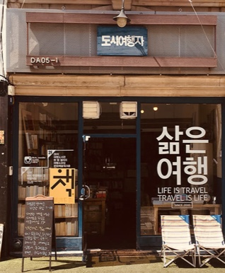
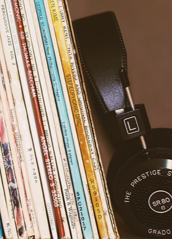
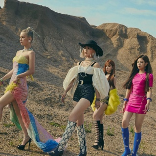
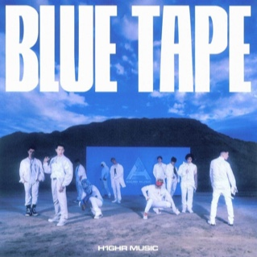
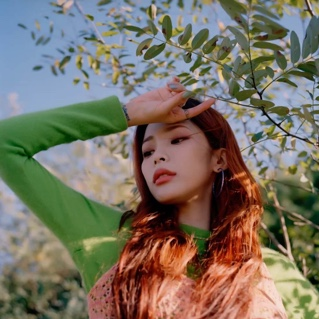
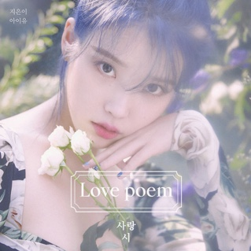
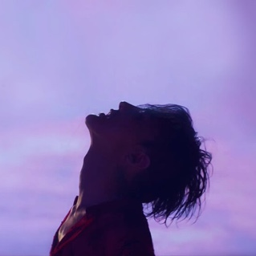
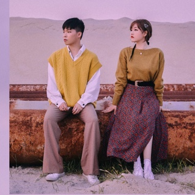
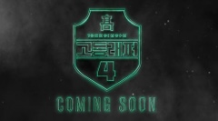
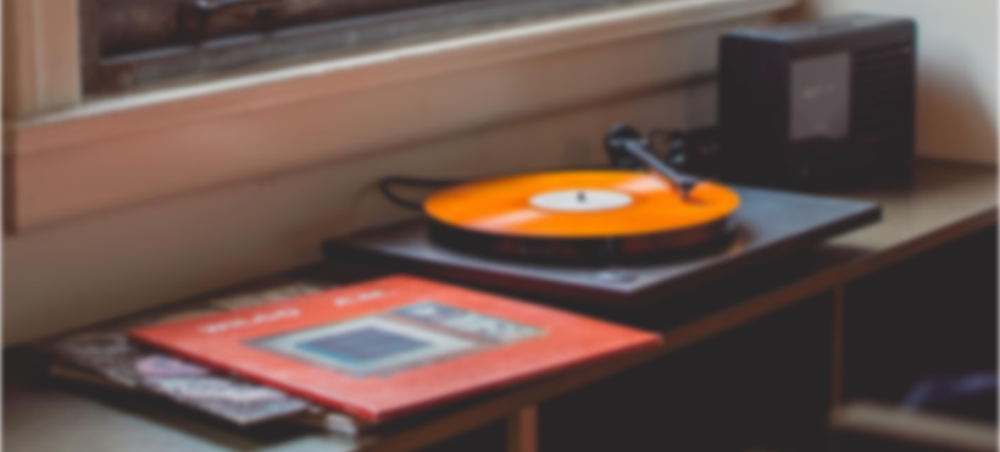

Korean Music Industry
-
Musically, the impact of Korean music has been growing rapidly, to the extent that collaborating with Korean artists has become an essential part of the big pop album rollout. The astonishing rise of Korean music has been one of both artistry and sharp music industry marketing.
-
"But what is so appealing about Korean music? Technically, isn't Korean music just the same music genres as the Western music industry but in a different language?"
-
Hallyu Wave or Korean Wave was coined by journalists from Beijing and first came out in print in 1999. The Chinese journalists used the term while discussing the phenomenal interest and popularity generated by Korean pop culture and the country’s culture in general. Korean Wave is not just about Korean musical groups and bands. It includes Korean dramas and Korean brands such as LG, Samsung, Hyundai, Kia and others.
-
At the same time, K-dramas (Korean dramas) were making inroads into the Chinese market, which started the Korean Wave. Korean dramas also became a hit in Japan, India and several countries in Southeast Asia. Among the first TV dramas that made a big impact was Winter Sonata, followed by Full House.
-

K-pop followed the footsteps of K-dramas, winning attention and interest among overseas audiences. Among the first performers outside South Korea were solo artist BoA and H.O.T., one of the first South Korean boy bands. The major breakthrough started in 2005, with the debut of boy bands such as Super Junior and SS501. The groups quickly rose to fame, building huge fan bases in many parts of Asia.
-

The advent of digital technologies, smart phones, video sharing sites and social media allowed the Hallyu Wave to flourish worldwide since 2010. At that time, the music exports of South Korean grew by 168 per cent. It was around that time, as well, when interest in K-drama and K-pop grew in the West. It cannot be denied that the song and video of Psy’s Gangnam Style contributed largely to the worldwide attention on K-pop.
-
K-pop
Known for the funky beats and outstanding performances, the K-pop genre consists of mostly groups which are formed by companies who take in “trainees”. These trainees practice their singing and dancing for years in order to debut.
K-R&B/Indie
Simiarly to K-pop, some companies will take in trainees to debut as a K-R&B/Indie artists. However, in other companies who value creative freedom tend to have more of a hands-off approach, simply helping them book their schedule.
-
K-hiphop
Most K-hiphop artists start off by underground rappers. Others come from K-pop groups who no longer want to perform as a K-pop idol. Most gain fame through rap survival programs such as High School Rapper and Show Me the Money.
Trot/Pansori
Trot and Pansori fall under the category of traditional Korean music. Similarly to Kpop, Trot and Pansori singers start off as trainees who train for their debut under a company. However, most gain recognition through survival programs “Miss Trot” and “Mister Trot”.
GENRES & Information
A Few of Our Recommendations
One of the interesting aspects of the Korean Music Industry is that people “stan” a specific company based on the music genre they specialize in. Here are some you can check out.
-

Perfect "All-kill" Artists
“All-kill” used to describe artists who top every Korean music chart (Genie, Melon, Gaon). Despite the company they’re in, these artists are considered to be at the top of the industry.
-

All the Latest News
-
IU’s 5th Album “HILAC” and “BYLAC” releasing 03/2021
March 01, 2021
-

High School Rapper Season 4 Episode 1 and Episode 2 ENG SUB
February 27, 2021
-
Seo Donghyun releases album ‘Bucket List’ with Joker (feat. Jamie) MV
February 23, 2021
IU’s 5th Album “HILAC” and “BYLAC” releasing 03/2021
March 01, 2021
High School Rapper Season 4 Episode 1 and Episode 2 ENG SUB
February 27, 2021
Seo Donghyun releases album ‘Bucket List’ with Joker (feat. Jamie) MV
February 23, 2021
-

Join the Community
Stay updated and receive music recommendations, latest news updates, and receive access to translated material.